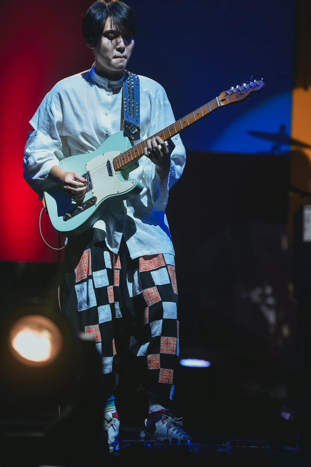
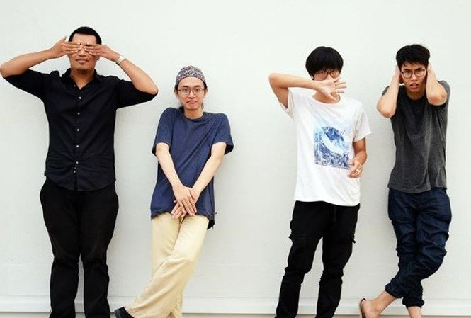
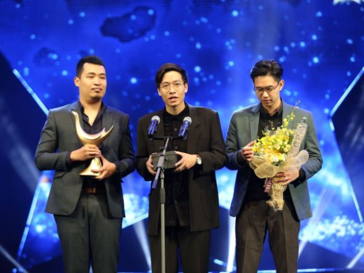

Các thành viên nhóm nhạc Ngọt

Điều gì đã làm nên sự thành công của Ngọt?
Khi Ngọt nhận cú đúp giải thưởng âm nhạc Cống hiến năm 2018, nhiều người đã không khỏi bất ngờ, bởi đây là giải thưởng âm nhạc không dành cho những “tay mơ”. Việc một giải thưởng âm nhạc uy tín ghi nhận những sáng tác đầy ngẫu hứng nhưng mới mẻ của 4 chàng trai thế hệ 9X cho thấy, họ có một sức hấp dẫn đặc biệt, đáng để được lưu tâm.
Nhạc của những chàng trai mới lớn
Ngọt là nhóm nhạc Indie (xuất phát từ “Independent” - độc lập) - là tên gọi chung của một xu hướng âm nhạc trên thế giới được tạo ra bởi những nghệ sĩ độc lập tự sáng tác, phối khí và thu âm ca khúc của mình, không phụ thuộc vào sự đầu tư hay quản lý của các nhà sản xuất lớn, các hãng thu âm.
Cộng đồng Indie ở Việt Nam đang phát triển và rất được giới trẻ quan tâm trong vài năm trở lại đây. Những cái tên như Lê Cát Trọng Lý, DALAB, Ngọt, Trang, Vũ, ... luôn được khán giả trẻ chào đón nhưng họ lại ít khi được xuất hiện trên những sân khấu lớn với sự quan tâm mạnh mẽ của truyền thông và khán giả đại chúng.
Ngọt được thành lập vào năm 2013 tại Hà Nội. Sau những thay đổi nhân sự, hiện ban nhạc Ngọt gồm những chàng trai thế hệ 9X: Vũ Đinh Trọng Thắng (hát, guitar), Nguyễn Hùng Nam Anh (trống), Phan Việt Hoàng (bass) Nguyễn Chí Hùng (guitar và thu âm). Ngọt sớm tạo được tiếng vang trong cộng đồng âm nhạc underground trên toàn quốc và qua nhiều bản thu âm trên mạng xã hội, ban nhạc dần trở thành một trong những nghệ sĩ nổi bật trong dòng nhạc Indie tại Việt Nam.
Ngọt được giới trẻ yêu thích bởi âm nhạc giàu năng lượng tươi mới, hồn nhiên, thể hiện suy nghĩ của thế hệ mới.
Trước khi ra mắt album đầu tay, Ngọt đã được khán giả yêu thích qua một vài sáng tác được tải lên YouTube như “Quan điểm”, “Xanh”, “Cho tôi đi theo”, “Em dạo này”, “Cá hồi”... Cũng chính từ những bản nhạc này, cộng đồng nghe nhạc của Ngọt nhanh chóng được thành lập với tên gọi: Kẹo.
Ngọt định vị với khán giả bằng phong cách sôi nổi, trẻ trung của những chàng trai mới đôi mươi, với những cá tính, suy nghĩ độc lập và sự tươi mới trong tư duy.
Album thứ hai của có tên “Ng`bthg” (Người bình thường) được ra mắt vào tháng 9-2017 với 4.000 đĩa. Đĩa đơn "Em dạo này" trích từ album nhận được sự đánh giá tích cực từ người hâm mộ và giới chuyên môn.
Ngọt được nhận hai giải âm nhạc Cống hiến năm 2018 với hạng mục "Ca khúc của năm", "Nghệ sĩ trẻ triển vọng".
MV “Em dạo này” (đạo diễn Đỗ Như Trang, sản xuất Ngô Đài Trang) từng đạt vị trí thứ 8 trên bảng xếp hạng Youtube Trending với hơn 800.000 lượt xem chỉ hơn 1 tuần phát hành. Ca khúc được Trọng Thắng lấy cảm hứng từ nhạc Waltz của Pháp, sáng tác khi đang lái xe từ trường về nhà. Bản thu hòa âm cho đĩa đơn được ban nhạc thực hiện cùng lúc với đợt lưu diễn tại Paris với âm hưởng Gypsy Jazz.
Đây cũng là ca khúc giúp “Ngọt” nhận được cú “đúp” giải thưởng âm nhạc Cống hiến 2018 ở hạng mục "Bài hát của năm" và "Nghệ sĩ mới của năm" - thành công khiến nhiều nghệ sĩ mơ ước.
Hiện nay, phần lớn các ca khúc của “Ngọt” mang phong cách pop, rock do Vũ Đinh Trọng Thắng sáng tác. Âm nhạc của Ngọt khoáng đạt, bay bổng, nhưng cũng chất chứa nhiều hoài bão, tự sự của tuổi trẻ với cách nhìn đầy lạc quan, trách nhiệm về cuộc sống. Có lẽ vì thế, các sáng tác của “Ngọt” thường được giới trẻ đón nhận với sự thích thú riêng.
Từ sân khấu riêng bước ra đại chúng
Với khả năng hoạt động độc lập, Ngọt có những buổi diễn riêng tại nhiều tụ điểm âm nhạc. Những buổi diễn thường không lớn về quy mô nhưng lại đông người hâm mộ. Ngọt cũng là số ít nhóm nhạc Việt tổ chức được buổi diễn riêng tại Paris, Pháp.
Người viết bài này đã vô cùng háo hức khi chứng kiến một buổi diễn của Ngọt tại một quán café nhỏ. Khi Vũ Đinh Trọng Thắng dạo câu đầu tiên của ca khúc “Em dạo này”, khán phòng hòa giọng hát theo. Khán giả của Ngọt đa phần là người trẻ, thuộc phần lớn ca khúc của nhóm.
Vũ Đinh Trọng Thắng, trưởng nhóm của Ngọt từng chia sẻ: “Thế hệ trẻ có nhiều áp lực, những mâu thuẫn và những câu hỏi cần phải trả lời. Toàn bộ các bài hát mà Ngọt đã biểu diễn là cách để chúng tôi đi tìm câu trả lời cho riêng mình trong đời sống, xã hội và cả tình yêu. Chúng tôi không sáng tác chạy theo đại chúng, mà viết để nói lên tiếng nói của thế hệ mình”.
Tháng 9-2017, Ngọt tổ chức liveshow đầu tiên tại Hà Nội. Hơn 3.000 vé của đêm nhạc được bán hết chỉ sau 3 ngày công bố. Đây là điều không dễ làm được đối với một ban nhạc ít chạy theo số đông.
Vũ Đinh Trọng Thắng, nhóm trưởng, tác giả của phần lớn ca khúc Ngọt thể hiện.
Năm nay, Ngọt lọt vào “Tâm điểm âm nhạc” (In the spotlight) - chương trình vốn “kén” khách mời. Những nghệ sĩ được “Tâm điểm âm nhạc” giới thiệu trong những năm qua thường là những tên tuổi đã được định danh trong làng nhạc Việt như: Mỹ Linh, Hồng Nhung, Tùng Dương, Hà Trần, nhạc sĩ Trần Tiến…
Với Ngọt, việc được đứng trên một sân khấu lớn với công nghệ sản xuất chương trình chuyên nghiệp là “giấc mơ” để những nghệ sĩ Indie có thêm động lực, cơ hội được thể hiện tài năng.
Nhạc sĩ Hồng Kiên, Giám đốc âm nhạc của “Tâm điểm âm nhạc” cho biết, đêm diễn vào ngày 24-11 tới đây của Ngọt, sẽ không có sự thay đổi khuôn mẫu nào. Ngọt sẽ được thoái mái thể hiện chất riêng như cách họ đang làm. Cái khác duy nhất là Ngọt sẽ biểu diễn cùng một dàn nhạc giao hưởng.
Giống như rất nhiều nghệ sĩ độc lập khác, Ngọt đang là cái tên được khán giả trẻ yêu thích. Âm nhạc với nguồn năng lượng tươi trẻ của Ngọt đã nói lên tiếng nói chung của một thế hệ. Họ xứng đáng được “vùng vẫy” ở một sân khấu rộng lớn hơn thay vì chỉ quanh quẩn trong những đêm diễn dành cho cộng đồng.